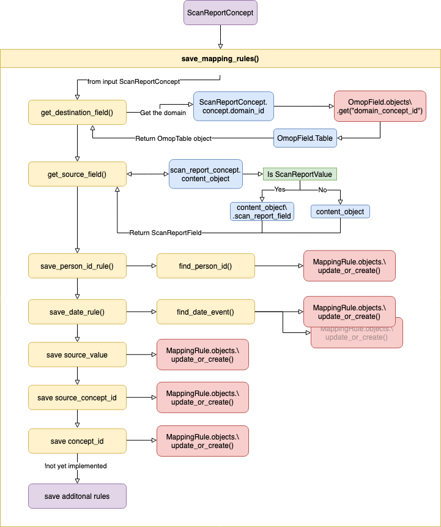

Mapping Rules
Mapping Rules determine how to link (and potentially modify) between source_fields (in
put data) and destination_fields (output data) when building CDM objects.
Prerequisites¶
Validation of ScanReportConcept occurs when they themselves are created. Their creation will fail if:
- The associated
ScanReportTabledoes not have aperson_idmarked. - The associated
ScanReportTabledoes not have adate_eventmarked.
These are requirements for building the mapping rules
Building Rules¶
For each ScanReportConcept that is created, the procedure to build Mapping-Rules proceeds as follows:
-
The destination_field (
OmopFieldobject) of the<domain>_concept_idis found usingScanReportConcept.concept.domain_id. The destination_table is linked to the object. -
From the source_field or source_value of the
ScanReportConcept.content_typethe source_table is found. -
At least five common mapping rules are first created:
1. Person ID¶
Is created for the destination_field of the (already found) destination_table:
- Every
CDMobject contains aperson_id - The rule is built with the current
source_tableandsource_valueorsource_field, as well as with theconcept, linking it to thedestination_table.
2. Date Events¶
At least one date based destination_field of the associated destination_table is created:
- Every
CDMobject must contain at least onedate_event - They are determined by the global variable
m_date_field_mapperwhich is defined inservices_rules.py:
m_date_field_mapper = { 'person': ['birth_datetime'], 'condition_occurrence': ['condition_start_datetime','condition_end_datetime'], 'measurement':['measurement_datetime'], 'observation':['observation_datetime'] } - As can be seen, most CDM objects have one date event, however
condition_occurrenceis an example where two date events are/were needed
Info
This was a request from the data-team to also map condition_end_datetime, with the current implementation, the condition_start_datetime == condition_end_datetime.
Attention
OHDSI/OMOP say the standard is to set condition_end_datetime = condition_start_datetime + 30 days
Previously this was handled automatically by the ETL-Tool, and via operations, which is now no-longer used.
- The rule is built with the current
source_tablefrom thecontent_object(source_valueorsource_field), as well as with theconcept, linking it to thedestination_table.
3. Source Value¶
- A rule is created by finding the
<domain>_source_value(OmopField) for the currentdestination_table. As with previous rules, the rule links this with theconceptand thesource_tableandsource_field.
Attention
This rule could be duplicated for the destination_field called value_as_number (or value_as_float). This appears in measurement and is a clone of source_value, with a different output format (FLOAT instead of CHAR). Formatting of rules is handled by the ETL-Tool, and therefore from the mapping-pipeline point of view, these rules are the same.
4. Concept ID¶
- A rule is created by finding the
<domain>_concept_id(OmopField) for the currentdestination_table. As with previous rules, the rule links this with theconceptand thesource_tableandsource_field.
5. Source Concept ID¶
- A rule is created by finding the
<domain>_source_concept_id(OmopField) for the currentdestination_table. As with previous rules, the rule links this with theconceptand thesource_tableandsource_field.
Attention
In the current implementation and validation, we force all concept IDs to be Standard. This means that always <domain>_source_concept_id == <domain>_concept_id. We may need to review this for the future and allow a source_concept and aswell as a concept object to be saved to a ScanReportConcept. The logic could be that if a source_concept is not null then <domain>_source_concept_id != <domain>_concept_id, which would not affect exisiting ScanReportConcept objects that are in the current database.
Schematic Diagram¶

Downloading Rules¶
In services_rules.py the function
def get_mapping_rules_json(qs:QuerySet) -> dict:
json format before it is downloaded when the "Download Mapping Rules" button is clicked.
The function works as follows:
Given a query set of all StructuralMappingRules associated to a given ScanReport:
- Group them based on the associated ScanReportConcept (object that spawned them)
- Create a dictionary to contain each destination_table
- Start looping over all rules associated to each ScanReportConcept (>=5 rules)
- Retrieve the source_table, source_field, destination_field from the
StrucuralMappingRule - If the
destination_fieldis aconcept_idadd "Term Mapping" to the output json. Add this as map or a scalar, depending on if it’s a ScanReportValue or ScanReportField that is to be mapped